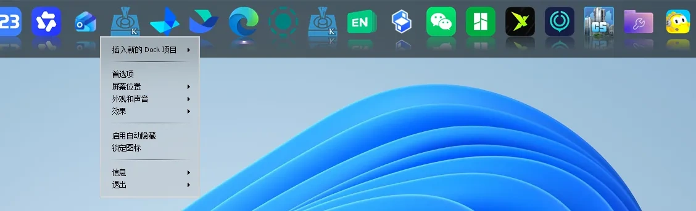
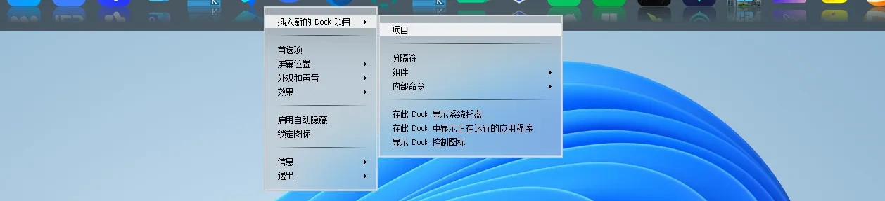
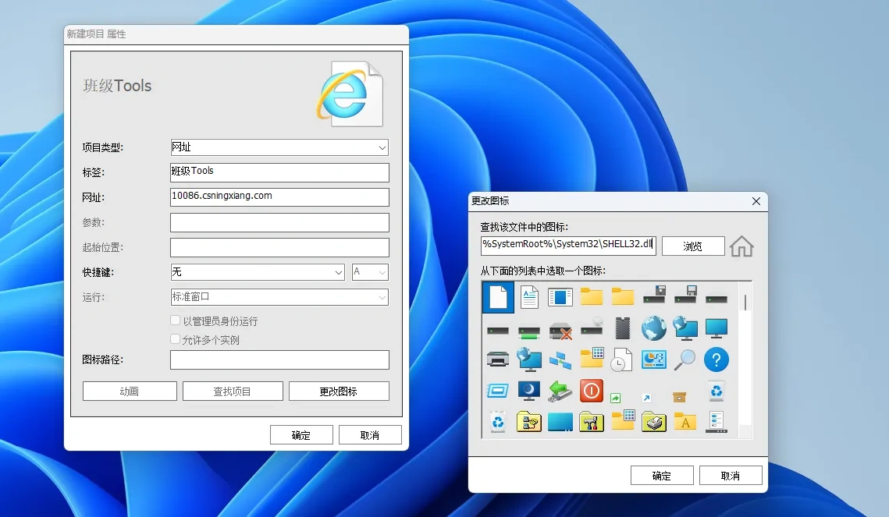

班级Tools本地快捷方式部署
通过网页模式 高级版【windows】
让班级工具触手可得，入驻电脑桌面
1. 在应用栏的任意图标上右击（触控为长按）

2. 插入新的Dock项目 > 项目

3. 填写属性配置:
① 类型 > 网址，标签随意
② 更改图标：查找该文件夹中的图标（粘贴指定路径），随便选一个顺眼的、合适的即可
③ 点确定
Tip：网址填写必须加协议（http://）（主域名记忆：cs长沙ningxiang宁乡.com）
网址：
若使用无效，填写备用
路径：

4. 完成 选择的图标将展现，如选的是星星，点击将调用edge打开